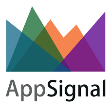

In a world of copy cats, it's hard to stand out and make a difference, so I learned how to hustle. I'm obsessed with hacks, whether it's a gym hack (hustle for that muscle), a life hack (how to talk to people when you have nothing to say) or a growth hack (so _that's_ how AirBnB did it...).
In order to grow a company, the key is to create a scalable growth machine* focused on deep understanding of the customer. If you know your customer, you can work to attract more potential customers and convert them to leads, trials, signups, and ultimately ambassadors.
I started as a co-founder of a travel agency, where I built amazing development and design teams who together have increased new signups by nearly 500% and added thousands in recurring revenue. I have gone on to startups where I was part of the growth team and learned about growth processes and strategies. I'm looking for the highest impact area and find a company's own form of data-driven decision making.
Besides working on growth, I enjoy organizing events like Amsterdam.rb and conferences like AMSxTech and TEDxAmsWomen.
I decided to learn the basics of code so I could understand my dev team and perhaps even write something new myself. I entered a Development Bootcamp where I was taught the basics of Ruby and Rails and eventhough I had fun, all the information was a lot to digest and I still wasn't able to fully understand developer talk...because, you know, you don't learn how to code in 1 week.
So, I committed to learning Ruby from scratch with Zed Shaws' "Learn Ruby the Hard Way" and found a brilliant teacher to help me through. Jeff Kreeftmeijer is an engineer at AppSignal and helps me with tough Ruby issues. I'm currently building my very first Rails app (demo of a web shop) and I built this page in plain HTML.
Born and raised in Amsterdam, I've learned to love rainy days. Give me a book, some coffee and chocolate and I'm the happiest person alive. I like learning Ruby (programming language) and in my spare time I enjoy tinkering around a bit. I enjoy spending time with my family and friends and when I'm not at home, I'm hitting the gym as much as I can.
*Brian Balfour's growth machine
 rayta.van.rijswijk@gmail.com
Twitter
rayta.van.rijswijk@gmail.com
Twitter